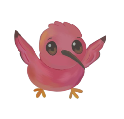

Projeto Guará
Chat Direção
Chat direcionado a coordenação, diretoria e profissionais da escola no geral.
5.678 Online 345.678 MembersAgenda
Aqui ficarão os avisos e atividades com notificação de prioridade máxima.
xxxx concluídas xxxx em esperaChat Turma xxx
Chat usado apenas para a turma
42 MembersChat amigável
Chat utilizado para se comunicar com amigos
20 members